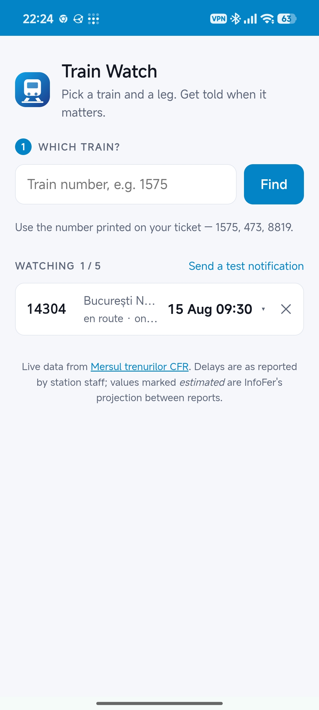
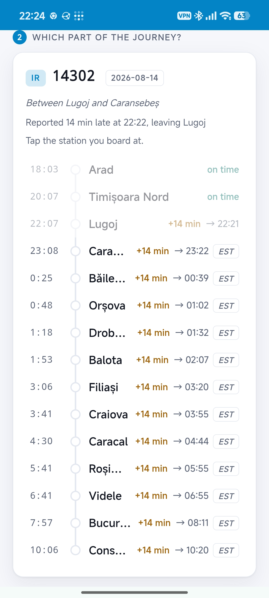
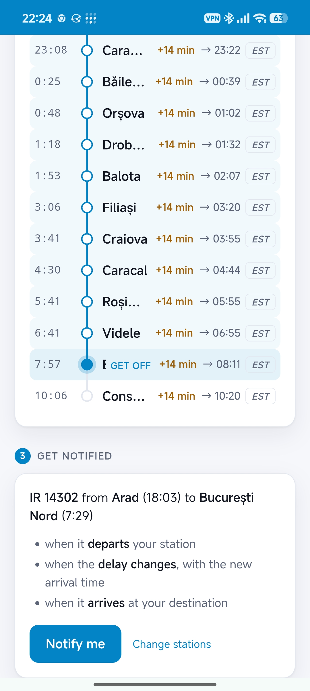
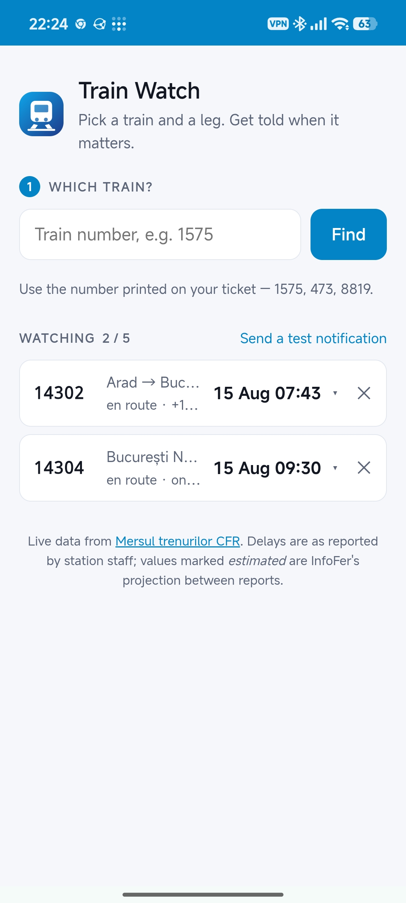

Intârzieri Tren

About The App
Watch one Romanian train between two stations and get a push notification when it departs, when its delay changes, and when it arrives.
Live at https://a1-flex-1.tail0b5311.ts.net (Tailscale Funnel → Caddy → rootless podman).
Where the data comes from
There is no public CFR API. The old appiris.infofer.ro endpoint is dead (NXDOMAIN) and the search flow on mersultrenurilor.infofer.ro is ReCaptcha gated. Two endpoints on that site are not:
| Endpoint | What it gives | Used for |
|---|---|---|
GET /ro-RO/Trains/LoadMapPartial |
~1.7 MB of Leaflet markers: every running train, position, delay | live map / /api/trains |
POST /ro-RO/Trains/TrainsResult |
one train's full itinerary: ordered stations, scheduled arr/dep, per-station delay | everything else |
The POST needs an antiforgery token and a ConfirmationKey, both of which the GET /ro-RO/Train/{number} page hands out; the ReCaptcha field is accepted empty on the first attempt. So one itinerary costs two requests.
An identifying User-Agent is sent and works — no browser spoofing needed.
Branches
A train may be published as several branches: alternative descriptions of the same run. IR 1996 appears as both Constanța–Craiova (12 stops) and Mangalia–Craiova (21 stops). They are separate div-stations-branch-* sections and must be parsed separately — concatenating them produces duplicate stations and a timeline that jumps backwards. The one InfoFer shows by default is the one without d-none.
How events are decided
InfoFer publishes no "has departed" flag, so a station counts as passed once scheduled_time + currently_reported_delay is in the past — the same arithmetic a passenger on the platform does.
- departed — once past the expected departure from the chosen origin.
- delay — when the delay at the chosen destination moves by at least
DELAY_THRESHOLD(default 5 min) since the last notification sent, not since the last poll, so small drift never accumulates into spam. - arrived — once past the expected arrival at the chosen destination; retires the trip.
A retired trip is never polled again. It stays visible in the user's list for LIST_KEEP_HOURS (12) so this morning's train is still there, and is deleted outright PURGE_AFTER_HOURS (48) after it finished so the table cannot grow without bound. Only retired trips are ever purged, so an overdue train that is still being watched is safe.
One subscription may watch MAX_ACTIVE_TRIPS (5) trains at once. Only active trips occupy a slot -- finished ones still visible in the list, and ones waiting to be purged, do not. The check and the insert share a BEGIN IMMEDIATE transaction so two requests arriving together cannot both see the last free slot; exceeding it returns 409.
Two retirement paths are distinguishable without an extra column: arrived = 1 means an arrival was actually detected; active = 0 with arrived = 0 means the 6-hour fallback fired because the train stopped being published. The UI shows the second as no longer tracked rather than pretending it is still en route.
Subscribing to a train that already left does not fire a departure notification: trips.prime() adopts the current state silently.
Values InfoFer marks with * are its own projection between staff reports rather than a report; the UI tags these est.
Reading the status line
InfoFer states the delay, the time it was reported and where it was measured as one Romanian sentence, so the place only exists as prose:
| Published | Parsed |
|---|---|
98 min întârziere la plecarea din Târgu Ocna (Raportat la 20:59) |
+98, 20:59, Târgu Ocna, departure |
102 min întârziere la trecerea fără oprire prin Radomirești |
+102, Radomirești, passing |
166 min întârziere la sosirea în Galați |
+166, Galați, arrival |
Fără întârziere, ajuns la destinație în Ploiești Sud |
0, Ploiești Sud, destination |
3 min mai devreme, între stațiile Brazi - Ploiești Sud |
-3, between Brazi/Ploiești Sud |
Note the last one: mai devreme means early, and the sign is carried by the words rather than a minus, so it has to be applied when parsing.
Load on the source
- The live map is fetched lazily — only when a client asks and the cached copy is older than
POLL_SECONDS. An idle server makes no requests. - Itineraries are fetched only for trains somebody is watching, only inside that train's journey window (
LEAD_MINUTESbefore scheduled departure until arrival + delay +MAX_OVERDUE_HOURS), and grouped by train — ten people watching the same train cost one fetch, not ten.
Access control
Invite-only, no usernames or passwords. A device proves who it is with a random token in an HttpOnly cookie, so the credential never touches JavaScript. Trips belong to a device, so two phones never see each other's trains, and one invite registers exactly one device -- "a second phone needs a second invite" falls out of single-use invites rather than being a rule.
you (on the tailnet) --> ./admin.sh invite "Ana"
|
v https://.../i/ABCD-EFGH-JKLM (WhatsApp)
recipient opens --> taps "Activate this device"
| POST
v
device row + cookie --> their own trainsRedemption is POST-only, behind a tap. Chat apps fetch shared links to build previews; if opening the URL redeemed it, WhatsApp would spend the invite before the recipient ever saw it. Preview bots do not POST. Verified: fetching /i/<code> leaves used_at null.
Codes are 12 characters from an alphabet with no I/1/O/0 (~60 bits), expiring after INVITE_TTL_DAYS. code_hash is the authority for redemption; the plaintext is kept alongside it only while the invite can still register something, so it can be re-shown or copied, and is wiped on redemption. A spent invite therefore shows no code -- issue a new one rather than trying to recover it. ./admin.sh prune (or the button on the admin page) deletes every used and expired invite; pending ones are never touched. They are accepted lower-case and without dashes, because the code doubles as the way in on iOS -- see below. Redemption is globally rate limited, since every request arrives from Caddy on loopback and per-IP limiting would be meaningless.
The admin page is at http://100.104.253.2/admin/ — tailnet only, served from a root the public site never maps, and /admin* is explicitly 404 there so a later change to the public root cannot start leaking it. Being plain HTTP it is not a secure context, so navigator.clipboard does not exist and the copy buttons fall back to execCommand.
Admin has no password: /api/admin/* exists only on the tailnet-only Caddy site, which injects X-Admin: 1. The public site refuses those paths outright and strips the header, so either control alone suffices. Manage it with ./admin.sh.
An unregistered device gets 401 from every endpoint except /api/health, which exposes no user data and is left open for monitoring.
Installing
The app shows an install bar when it is running in a browser rather than standalone. On Chromium it captures beforeinstallprompt (suppressing Chrome's own mini-infobar) and triggers the real install dialog; the event fires only if the manifest, icons and a fetch-handling service worker are all in order, so a missing install button means one of those broke. Safari never fires it, so on iOS the bar explains the Share menu instead. Dismissal is remembered in localStorage, and the bar hides itself once display-mode: standalone matches.
iOS
Safari and an installed PWA have separate storage, so a code redeemed in Safari does not register the installed app -- and iOS only delivers push to the installed app. Recipients should add the page to the Home Screen first, open it from there, and type the code. That is why the invite is a typeable code and not only a link.
Layout
backend/
db.py sqlite connection handling
accounts.py devices, invites, cookie tokens
iris.py live-map parser (positions, delays, nearest station)
route.py itinerary parser: branches, stops, day rollover, delays
trips.py SQLite store + event detection + watcher loop
push.py VAPID keypair + Web Push sending
app.py FastAPI: /api/route, /api/trips, /api/vapid, /api/trains
web/ the PWA (no build step, no framework)
quadlet/ systemd unit for rootless podmanState lives in the named volume train-api-data (/data): the VAPID keypair and trips.db. The keypair must survive rebuilds — regenerating it silently invalidates every browser subscription already issued.
The watching list
Each watched trip expands in place to show the train's whole route with the chosen leg highlighted, the same rendering used when picking stations (stopRows() serves both, interactive or not). Stops whose expected time has passed are dimmed, so how far the train has got is readable at a glance.
Expanding is a local DOM toggle, not a refetch, and the panel repaints from the cached route before revalidating -- otherwise the 60s refresh would blank an open panel back to a loading message.
Deploying
./deploy.sh # web assets only
./deploy.sh --api # also rebuild the image and restart the unit
./admin.sh invite X # mint an invite (tailnet only)
./admin.sh invites # list, with codes for the ones still usable
./admin.sh prune # delete used and expired invites
./admin.sh devices # who is registered, and what they are watching
./admin.sh revoke N # lock a device out immediately
./admin.sh forget N # delete a device outright (its trips go too)
./admin.sh prune-devicesAssets are stamped with a content hash so the service worker and the ?v= query strings change together.
Caveats
- The parsers are coupled to InfoFer's HTML and will break when it changes. Mitigated, not solved: malformed blocks are skipped individually, the last good map snapshot keeps serving, and
/api/healthexposesstale,consecutive_failuresand the last watch pass. - Overnight trains wrap past midnight; day offsets are inferred from times moving backwards, tracked per arrival/departure rather than per station (a train can arrive 23:51 and depart 00:02).
- SQLite cannot add a foreign key with
ALTER TABLE.push_subs.device_idarrived that way during the migration, so on a migrated database it has noON DELETE CASCADEandPRAGMA foreign_key_checkreports clean because there is no constraint to check. Deleting a device removes its push subscription explicitly rather than trusting the cascade;tripswas rebuilt during the migration so it does carry the key. The same limitation is whyON CONFLICT(device_id)needs its unique index created by hand. - An invite link is a bearer token. Whoever opens it first is registered. Forwarded in a group chat, it is gone -- single use, expiry and revocation limit the damage but do not prevent it.
./admin.sh devicesshows last-seen times so a stranger is visible. - Losing the cookie means losing access. Cleared site data, a different browser, or private browsing all need a fresh invite. Storage for a non-installed site on iOS is evicted after 7 days idle, which is another reason to install to the Home Screen.
- The Funnel URL is public regardless; the gate is application-level, so an unregistered visitor can load the shell but can do nothing with it.
- iOS only exposes Web Push to PWAs installed to the Home Screen.
- Delays are reported by station staff, so they are as accurate — and as granular — as those reports.
Gallery



Try It Out
Access is invite-only. Open the web app on your mobile browser to install it.
Open Web App